autocmd 还是很方便的{event} 触发事件{pattern} 文件模式{cmd} 具体执行命令{augroup} 命令组public在java文件里面就可以改变颜色呢？？🤔git clone http://gitee.com/overmind1980/oeasyvim.git
cd oeasyvim
vi oeasy.java
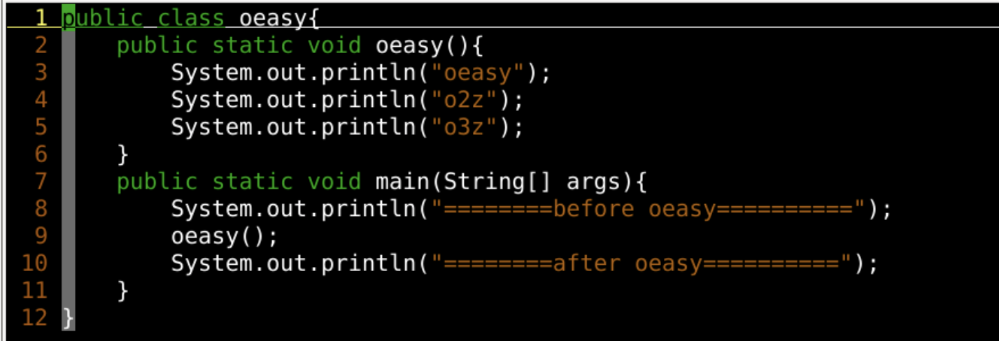
public、void是绿色的:colorscheme murphy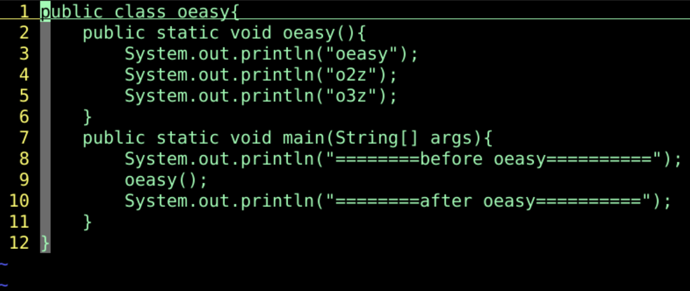
public、void也不变色了:hi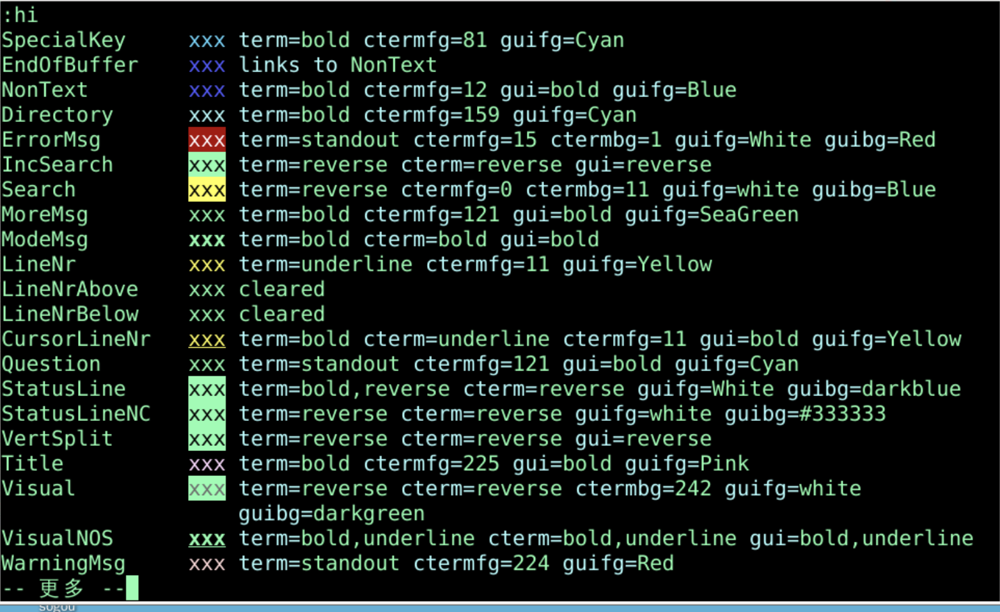
public没有改变颜色java.vimsudo find / -name java.vim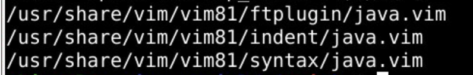
ls /usr/share/vim/vim81/syntax/java.vim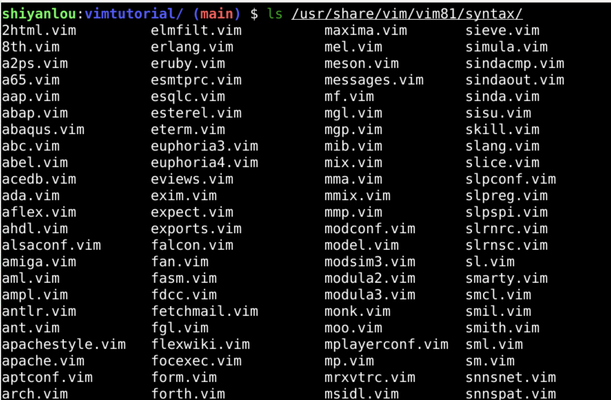
vi /usr/share/vim/vim81/syntax/java.vim/String/\<String\>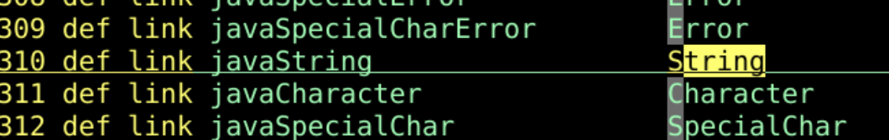
:q 退回到oeasy.java:colorscheme murphy:hi String ctermfg=brown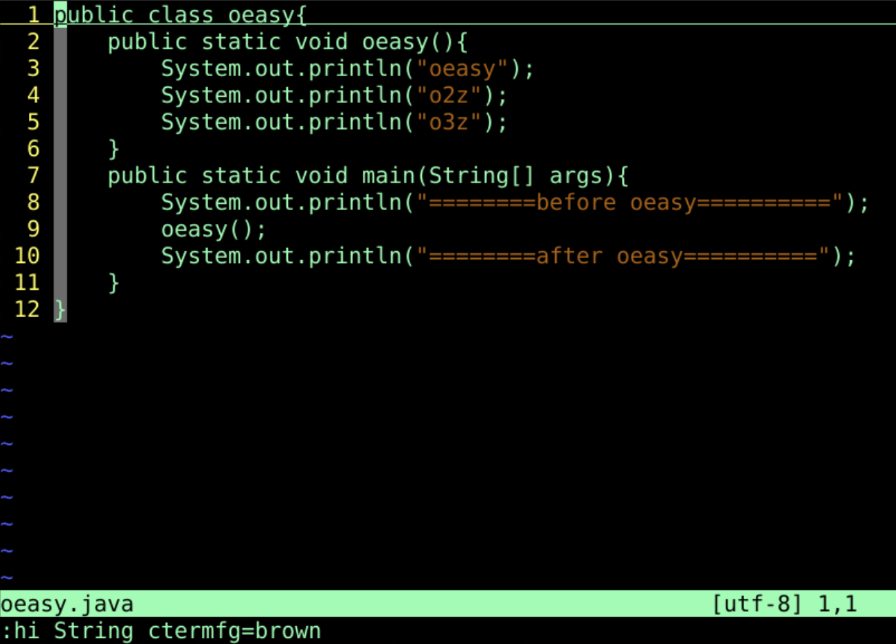
:e /usr/share/vim/vim81/syntax/java.vim/\<String\>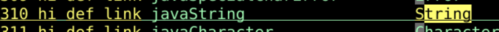
/javaString/\<javaString\>:set wrap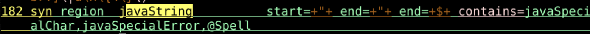
murphy.vim目前没有定义String这个区域的颜色hi String ctermfg=brown了murphy.vim就真没有String区域的颜色定义么？sudo find / -name murphy.vimvi /usr/share/vim/vim81/colors/murphy.vim/String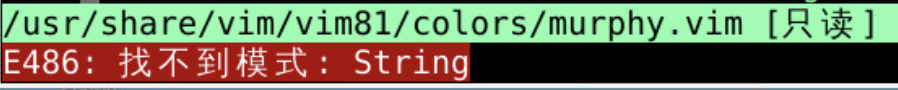
sudo vi /usr/share/vim/vim81/colors/murphy.vim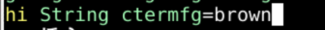
vi oeasy.java 再切换到murphy配色public 等关键字vi /usr/share/vim/vim81/syntax/java.vim/public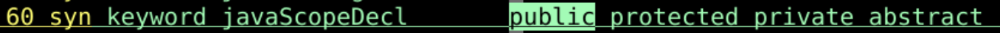
javaScopeDecl 上 按下*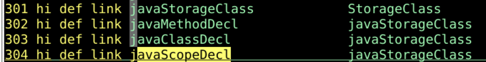
javaScopeDecl被定义为javaStorageClassjavaStorageClass被定义为StorageClassoeasy.java:hi StorageClass=cyan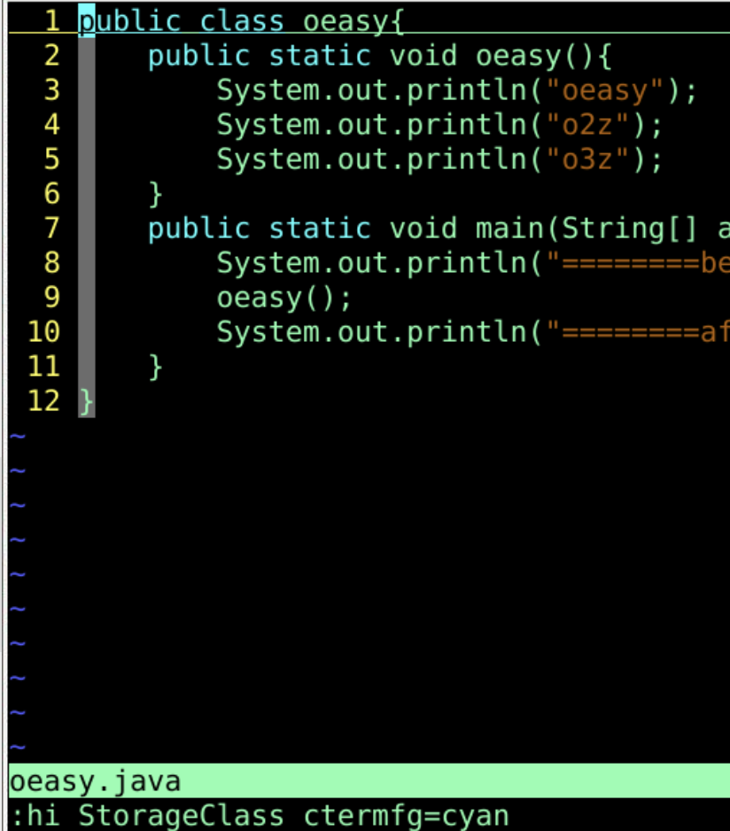
sudo vi /usr/share/vim/vim81/colors/murphy.vim:hi StorageClass=cyanoeasy.javaString、StorageClass颜色的定义